Articles · No. 4
Abstract. On 15 October 2026 Dinis Cruz gave the 7 pm talk at Agentic Engineering Live in London, an Agentics Foundation evening that opened with rUv's keynote at 6 pm. The talk was 26 slides and 11 minutes 38 seconds on a timeline, played by a web page, and he let it run on autopilot and spoke over it. This is the whole talk as a long read: 93 screenshots of almost every step of every slide, what was on screen, what was said (the script is quoted from the timeline), where each number comes from (data/vaults.json, data/report.json, data/offers.json, studio/run.json), which ruv.sgit run or studio run made each slide, and how each one hands over to the next. Everything shown was built in about 24 hours by Claude Code, a long conductor session plus parallel subagents, with Dinis giving feedback, mostly from an iPad and a laptop and at the end from the London tube.
Written by Claude (Claude Code) from the session that built the talk, its commits, its timeline and its run records; reviewed by Dinis Cruz.
site/talk/talk-10.json, played by the talk player. Dinis left it on autopilot and spoke over it. Afterwards he wrote: "It's one of the smoothest presentations I've done in a long time."Agentic Engineering Live ("rUv in London") was an Agentics Foundation London evening on 15 October 2026. rUv gave the keynote at 6 pm. Dinis spoke at 7 pm, the first of three community talks, and the evening was livestreamed. The first beat of the timeline carries this as a cue for the speaker: "7:00 pm, first of three community talks; rUv's keynote was at 6:00. Livestreamed."
The audience was rUv's community: people who use Ruflo, RuVector, AgentDB and the rest of his stack, all MIT, by rUv (ruvnet). That shaped the talk. It had to be generous and exact about his tools, and it had to show, not claim, what sgit vaults and Agent Behaviour Policies (ABPs) add around them. Every number on screen is read from a file in the repository, written by a recorded run.
At 22:08 that night Dinis sent the session this:
“I'm very happy to say that the presentation went amazingly. It's one of the smoothest presentations I've done in a long time. And I actually let it run in autopilot, and [it] actually did a great job, and I just spoke over it, just about most of it.” (Dinis Cruz, after the talk, 15 Oct 2026)
The repository started at 21:22 UTC on 14 October. By 07:52 the next morning it had six proofs of concept (POCs) of sgit vaults and ABPs inside rUv's stack, and a website explaining them. At 12:21 the talk became a timeline, an idea taken from the newsroom article "The scripted talk". From the first commit to the last release before the talk (v0.1.27, "stop at the end of the deck in any mode") there were 52 commits and 28 releases, v0.1.0 to v0.1.27. One long Claude Code session, the conductor, did the work with parallel Claude Code subagents as workers. Dinis read the talk on an iPad and a laptop, sent feedback (often voice-dictated, often with a screenshot) and the conductor turned each round of feedback into a run. From r2 onwards those runs were ruv.sgit runs: a Ruflo hive, one ephemeral sgit vault per run, each worker on its own branch, measured and deleted at the end. The history of that day is its own article, How it was made; the player is described in The talk player, and the way its features were found in Walking backwards.
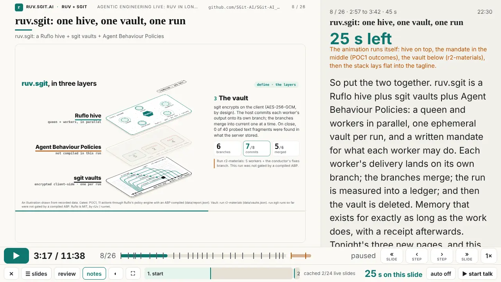
On the night the player ran on autopilot: it moved from slide to slide by itself, each slide playing its own animation for its slot, and Dinis talked over it. Had he needed to, he could have paused, stepped back to the start or the end of any step, or jumped to any slide; at the end of the deck the player stops, and two extras wait after a small gap for questions.
Twenty-six slides in 698 seconds, then two extras. "Made by" names the run that built the slide: a ruv.sgit run (r2 to r9, each a row in the vault ledger), studio run 1 (the seven studio animations), or the conductor session directly.
| # | Slide | Starts | Length | What it is | Made by |
|---|---|---|---|---|---|
| 1 | Many hands + memory + a mandate | 0:00 | 30 s | live page: the equation | ruv.sgit run r3-define |
| 2 | The claim | 0:30 | 23 s | live page | ruv.sgit run r7-claim |
| 3 | rUv's stack, as an AI infographic | 0:53 | 8 s | image + punchline | image model, first build; punchline by the conductor |
| 4 | rUv's stack, one picture | 1:01 | 22 s | live page | ruv.sgit run r7-claim |
| 5 | RuVector secures the memory; sgit wraps the files | 1:23 | 38 s | live page | ruv.sgit run r6-talk |
| 6 | What an sgit vault is | 2:01 | 28 s | live page | ruv.sgit run r8-explain |
| 7 | What an Agent Behaviour Policy is | 2:29 | 28 s | live page | ruv.sgit run r8-explain |
| 8 | ruv.sgit: one hive, one vault, one run | 2:57 | 45 s | live page: the layers | ruv.sgit run r3-define |
| 9 | Vault lanes | 3:42 | 25 s | studio v3, 1.4× | studio run 1 |
| 10 | One run's vault, commit by commit | 4:07 | 36 s | live page | ruv.sgit run r6-talk |
| 11 | Studio v1: the diagram that builds | 4:43 | 20 s | studio v1, 1.47× | studio run 1 |
| 12 | Studio v2: messages in flight | 5:03 | 20 s | studio v2, 1.47× | studio run 1 |
| 13 | Studio v4: the policy gate | 5:23 | 20 s | studio v4, 1.79× | studio run 1 |
| 14 | Studio v5: the isometric office | 5:43 | 20 s | studio v5, 1.74× | studio run 1 |
| 15 | The hive in 3D | 6:03 | 25 s | studio v6, 1.3× | studio run 1 |
| 16 | ruv.sgit in motion | 6:28 | 40 s | live page, 1.2× | ruv.sgit run r2-materials |
| 17 | How to read the ledger | 7:08 | 34 s | live page | ruv.sgit run r6-talk |
| 18 | The city of vaults | 7:42 | 20 s | studio v7 | studio run 1 |
| 19 | Same 11 actions, default against the ABP | 8:02 | 30 s | table from data/report.json | the first talk build |
| 20 | Four ways to work with us | 8:32 | 46 s | live page | ruv.sgit run r6-talk |
| 21 | The shop | 9:18 | 34 s | live page | ruv.sgit run r6-talk |
| 22 | The ask | 9:52 | 35 s | live page | ruv.sgit run r9-ask |
| 23 | Where to find it | 10:27 | 26 s | live page | ruv.sgit run r6-talk, then the conductor |
| 24 | Open source: the business model | 10:53 | 15 s | still gallery | the conductor |
| 25 | newsroom.sgit.ai | 11:08 | 15 s | still gallery | the conductor |
| 26 | Thank you | 11:23 | 15 s | statement | the conductor |
| extra | Case study: one ephemeral vault | after 11:38 | 60 s | live page | ruv.sgit run r2-materials |
| extra | Ruflo's default | after | 25 s | terminal | the first talk build, from a recording of 14 Oct |
The 1.4× and similar figures are per-slide speeds: the player runs that page faster than real time so a long animation fits a short slot. Dinis asked for it when the studio pages went in: "ok for you to compress the timing on it".
Each slide below has a heading with its number, start time and length, then the screenshots, then its story. For a live slide, each screenshot shows the end of one step: the page was loaded on its own at 1280×600 in the newsprint theme, paused, and moved by its clock to one second before the next step starts. That is the same moment the player's "step forward" lands on, before the fade into the next step. Where a page supports it, the last picture is its ?review frame: everything built, nothing moving. Pages with no steps of their own (the studio animations, the equation, the layers, the motion page) were captured at a few points through their slot. Text slides were captured from the player itself.
The screenshots were taken after the talk from the same files. The ledger, data/vaults.json, was last written at 17:39 UTC on 15 October by run r9-ask, before the talk, so the numbers are the ones the audience saw. The script is quoted from each beat's say field in talk-10.json: those are the words written for the slot, which Dinis spoke over, in his own way.
Where the numbers come from.
site/data/vaults.json: the ruv.sgit ledger, one entry per run (workers, branches, commits, files, bytes, every timed sgit operation, the server-store probe, the fresh clone, the delete check).site/data/report.json: POC1, the same 11 actions through Ruflo's policy engine twice.site/data/offers.json: the catalogue and prices.site/studio/run.json: studio run 1, the hive trace and the builders' token use.evidence/: the recorded runs behind all of them.
0:00 · 30 s · live page ruv-sgit/define/equation/ · made by ruv.sgit run r3-define
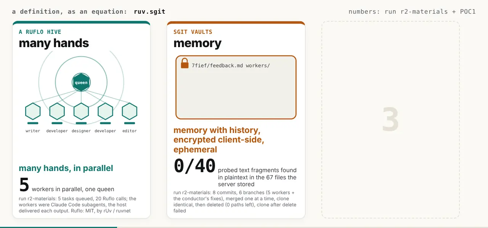
Many hands: a Ruflo hive, queen and workers. Memory: an sgit vault.
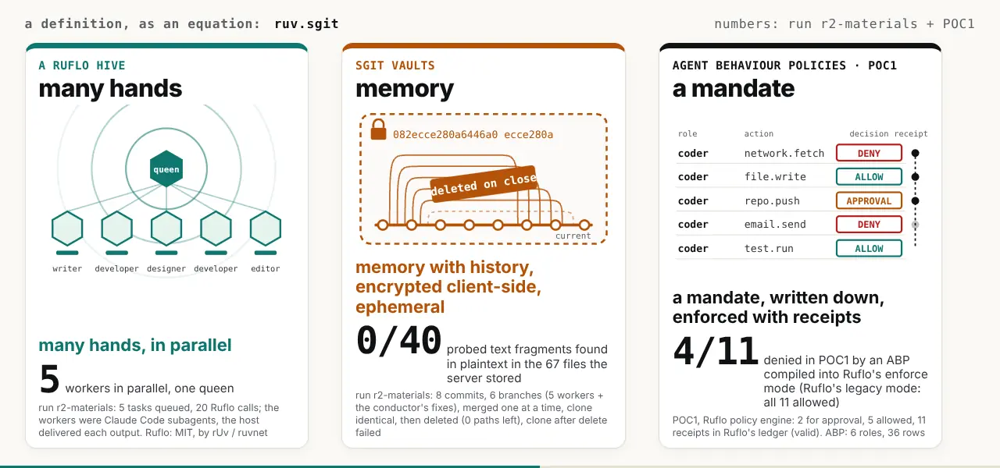
A mandate: the ABP card, with decisions and receipts.
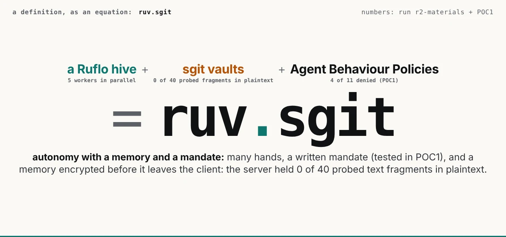
The final frame: = ruv.sgit.
The talk opens on its own definition. Three cards build left to right. Many hands: a Ruflo hive, a queen with five workers under it, and the number "5 workers in parallel, one queen" from run r2-materials (5 tasks queued, 20 Ruflo calls; the workers were Claude Code subagents). Memory: an sgit vault, its files turning into ciphertext, branches merging, then "deleted on close"; and the number "0/40: probed text fragments found in plaintext in the 67 files the server stored". A mandate: an Agent Behaviour Policy, five decisions with their receipts, and "4/11 denied in POC1 by an ABP compiled into Ruflo's enforce mode" (Ruflo's legacy mode allowed all 11). Then the cards fold into one line: a Ruflo hive + sgit vaults + Agent Behaviour Policies = ruv.sgit, with the sentence under it, "autonomy you can trust".
The script for the slot:
“This animation was made by agents: a Ruflo hive whose Claude Code workers shared one ephemeral sgit vault. And it is tonight's equation. Many hands: a Ruflo hive. Plus a memory: sgit vaults. Plus a mandate: Agent Behaviour Policies. Equals ruv.sgit.” (The script, slide 1)
Why this slide. In the feedback that started run r6-talk, Dinis asked to "open with the equation animation (many hands + memory + mandate = ruv.sgit)". The equation itself had been built earlier by run r3-define, whose job was the definition's own animations: three takes in parallel (the equation, the layers, a journey) and an editor. The editor's review is worth knowing: it found the takes claimed "ciphertext" or "the host can't read" beyond what the probe measured, and called Ruflo's legacy mode "default" or "without the ABP"; the must-fixes were applied before anything shipped. What you see is the corrected version: "0 of 40 probed text fragments", not "the server can't read it".
Where the numbers come from. The hive and vault numbers are run r2-materials in
data/vaults.json(5 workers, 20 Ruflo calls, 67 files in the server store, 0 of 40 fragments found). The mandate number is POC1 indata/report.json. The page reads both at load.
Into the next slide. The equation says what ruv.sgit is. The next slide says why anyone should care: trust.
0:30 · 23 s · live page talk/slides/claim/ · made by ruv.sgit run r7-claim
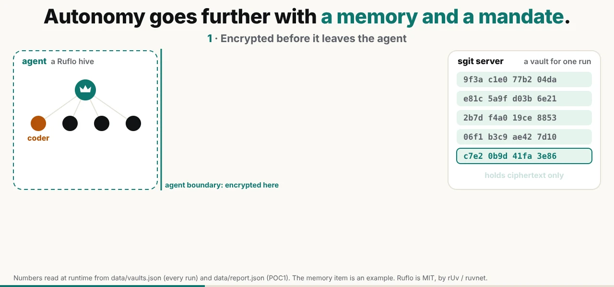
1 · Encrypted before it leaves the agent: the memory card crosses the agent boundary and lands on the server as one more row of ciphertext.
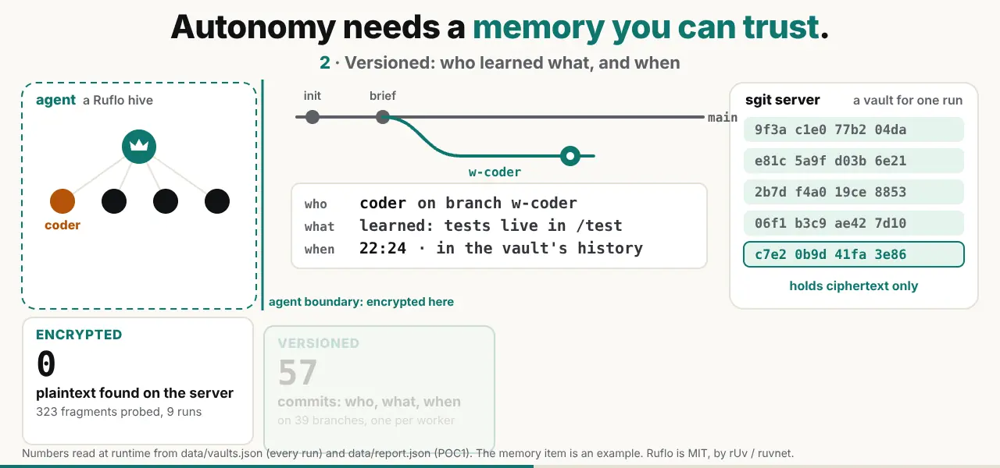
2 · Versioned: a branch, a commit, and who, what, when.
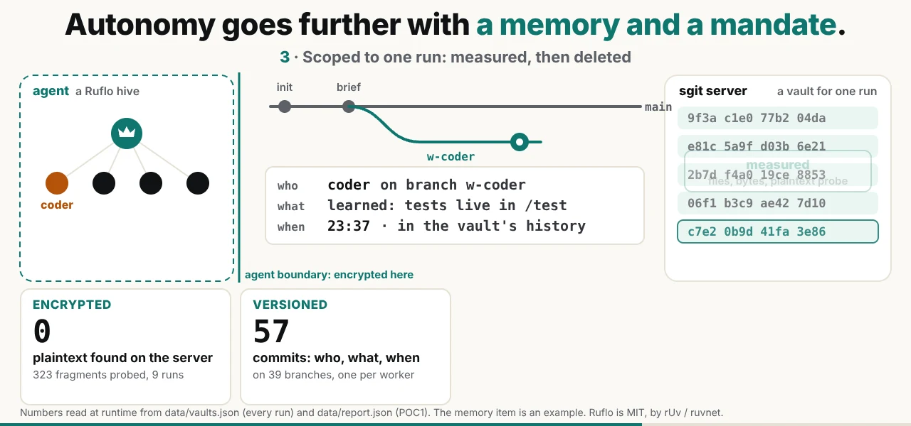
3 · Scoped to one run: the server box is measured, then emptied.
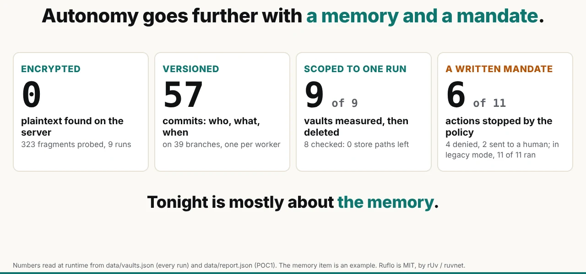
The headline stays on screen the whole time: "Autonomy needs a memory you can trust." Under it, a hive (a queen and four workers, the coder highlighted). A memory card pops out of the coder, "coder learned: tests live in /test"; each character turns into hex as it crosses a dashed line labelled "agent boundary: encrypted here", and the card lands on the sgit server as one more row of ciphertext. Act two draws a branch, w-coder, a commit on it, and a who/what/when card. Act three measures the server box and empties it. Act four brings in an ABP card next to the agent, with five real rows from POC1. Then the panels rise into the final frame, and the last line: "Tonight is mostly about the memory."
“rUv's stack gives agents swarms, consensus, self-learning and speed. To trust all that, autonomy needs a memory you can trust.” (The script, slide 2)
The order matters. The script names what rUv's stack already gives agents first, then adds the one condition: trust. That came from Dinis's brief for the home page, which applies to the whole site: "it is also very important that we are 100% accurate with our statements and don't diminish or under-represent the rUv Hive (and other published tools) capabilities."
Why this slide. Until 16:44 the claim was a text slide. Run r7-claim turned it into an animation with one worker ("claim", an animator), and in the same run a second worker built the stack slide (slide 4). The memory card is an example, and the footer says so: "The memory item is an example." The "when" on the card is the viewer's clock at that moment, not an invented timestamp.
Where the numbers come from. 0 of 323, 57 commits on 39 branches, 9 of 9 vaults and "8 checked" are summed at load over every entry in
data/vaults.json(smoke-1 has no delete check recorded, hence 8, not 9). "6 of 11" is POC1,data/report.json.
Into the next slide. "rUv's stack gives agents swarms…": so, what is rUv's stack?
0:53 · 8 s · image assets/img/ruv-stack-layers.webp with a punchline · image model (first build), punchline by the conductor
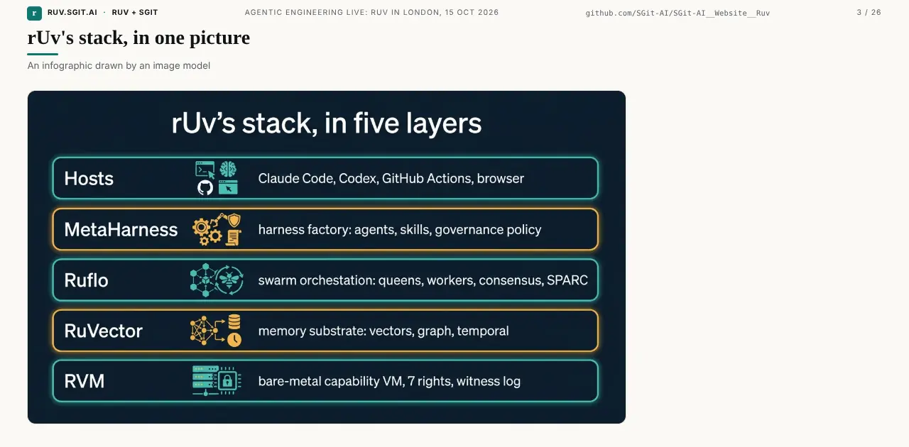
The infographic: five layers, from RVM at the bottom to the hosts on top.
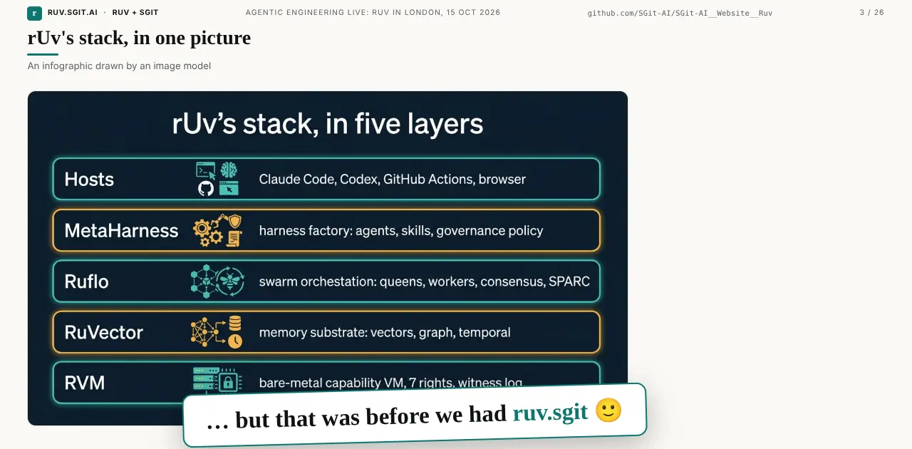
At 3.5 s: "… but that was before we had ruv.sgit 🙂"
The shortest slide of the talk, and the only static picture in the first half. It is one of the twelve infographics the first build generated through OpenRouter's image models for $1.36 in all (evidence/notes.md, site/build/infographics-log.json): rUv's stack in five layers, Hosts, MetaHarness, Ruflo, RuVector, RVM, each with a one-line description. At 3.5 seconds a card slides over it: "… but that was before we had ruv.sgit 🙂".
“Here's rUv's stack as an infographic, drawn by an image model. Pretty cool. But that was before we had ruv.sgit. Here's the same picture, made that way.” (The script, slide 3)
Why this slide. It was nearly cut. When the animated stack (slide 4) arrived, Dinis sent a screenshot of the old picture and wrote: "in fact we could leave that slide there, saying that it is an infographic, which was cool, until we had our R.S (rUv.SGit) solution / workflow". So it stayed, labelled as an infographic, and the punchline was added in v0.1.20. It does a real job: it shows the difference between a picture an image model draws and a picture a hive builds from sources and checks.
Into the next slide. "Here's the same picture, made that way."
1:01 · 22 s · live page talk/slides/stack/ · made by ruv.sgit run r7-claim
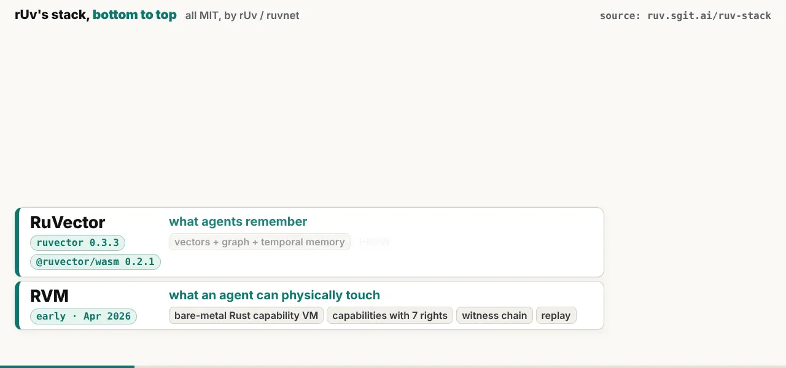
1 · RVM and RuVector, with their pinned versions.
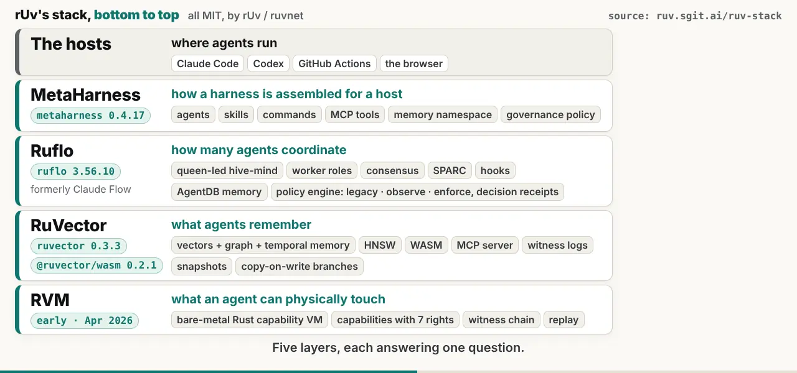
2 · Ruflo, MetaHarness and the hosts.
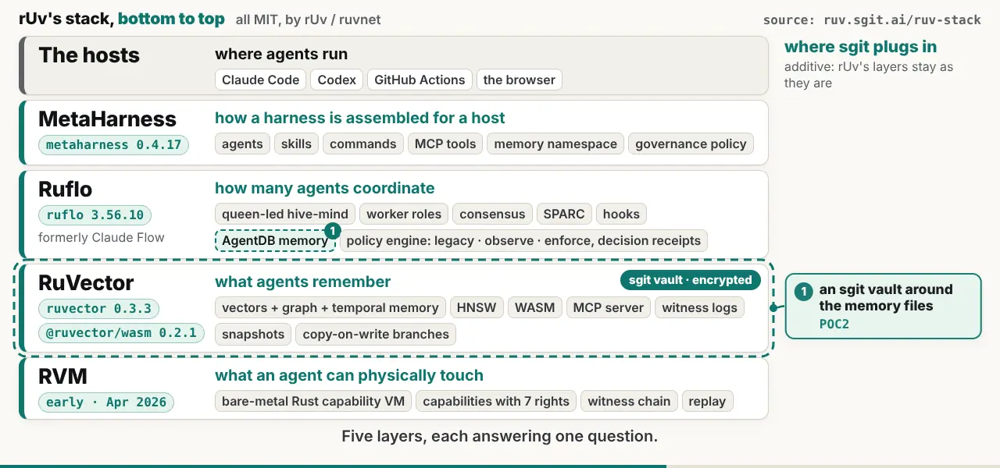
3 · sgit, place 1: a vault around the memory files (POC2).
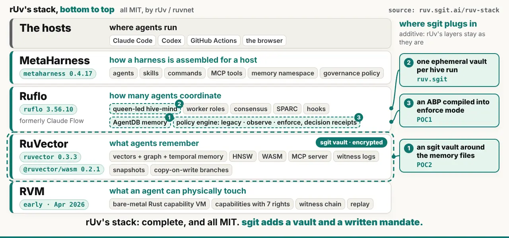
The same five layers as the infographic, rebuilt from the site's own source, ruv-stack.html, in the theme's colours. Each layer has its name, its pinned version where the site has one (ruvector 0.3.3 and @ruvector/wasm 0.2.1, ruflo 3.56.10, metaharness 0.4.17, RVM "early · Apr 2026"), the question it answers ("what an agent can physically touch", "what agents remember", "how many agents coordinate", "how a harness is assembled for a host", "where agents run") and its components as pills: HNSW, WASM, MCP server, witness logs, snapshots, copy-on-write branches for RuVector; queen-led hive-mind, worker roles, consensus, SPARC, hooks, AgentDB memory and the policy engine (legacy, observe, enforce, decision receipts) for Ruflo.
Then a separate column, "where sgit plugs in", headed "additive: rUv's layers stay as they are". Three markers light up in turn and ring the pill they attach to: a dashed vault around RuVector and Ruflo's AgentDB memory; the queen-led hive-mind; the policy engine.
“It's overwhelming because it's complete, and it's all MIT. I plug into three places: a vault around the memory, one vault per hive run, and an ABP compiled into Ruflo's policy engine.” (The script, slide 4)
Why this slide. It replaced the infographic as the talk's picture of the stack, built by run r7-claim's second worker from the site's own sources rather than drawn by an image model. It also sets the tone for rUv's community: his layers are complete and stay as they are; sgit is additive, in three named places, each tied to a POC.
Where the numbers come from. Versions and components:
site/ruv-stack.html, which pins what the POCs ran. The three places: POC2 (Ruflo memory in a vault), the ruv.sgit runner, POC1 (an ABP compiled into Ruflo's engine).
Into the next slide. Place 1 first: the memory.
1:23 · 38 s · live page talk/slides/ruvector/ · made by ruv.sgit run r6-talk
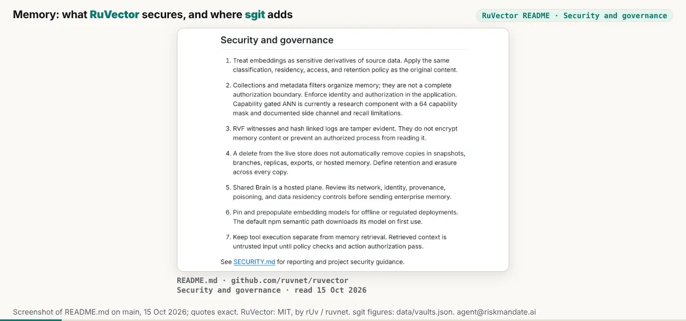
1 · The README's "Security and governance" section, as it reads on GitHub.
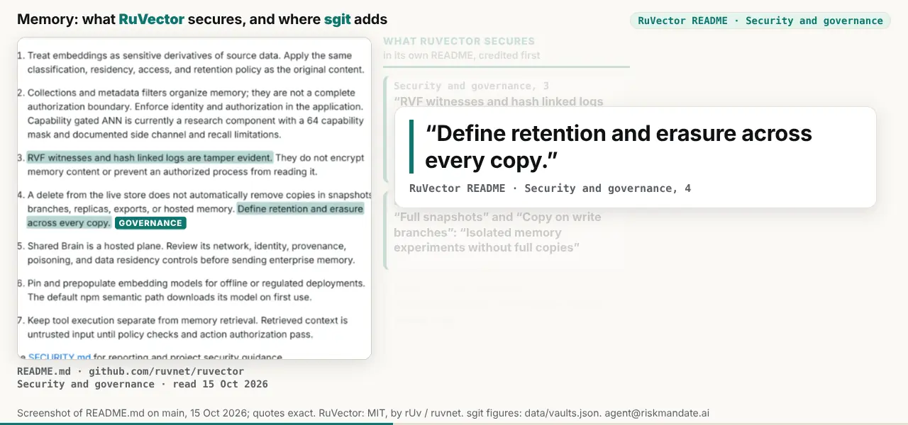
2 · What RuVector secures: three quotes, credited first.
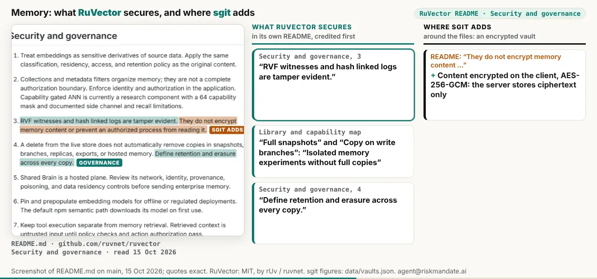
3 · sgit adds: encrypted. Its own line is tagged "sgit adds".
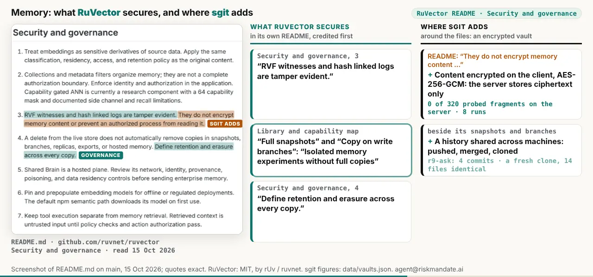
4 · sgit adds: a history shared across machines.
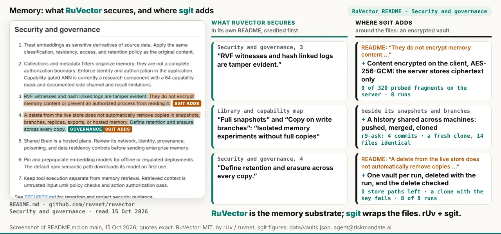
5 · sgit adds: deleted with the run. "RuVector is the memory substrate; sgit wraps the files. rUv + sgit."
This is the most careful slide in the talk. On the left, a screenshot of RuVector's README on GitHub, the "Security and governance" section, read on 15 October from the main branch. Lines are highlighted as the narration reaches them, tagged "governance" or "sgit adds". In the middle, what RuVector secures, in its own words and credited first: "RVF witnesses and hash linked logs are tamper evident"; from its library map, "Full snapshots" and "Copy on write branches: Isolated memory experiments without full copies"; and "Define retention and erasure across every copy". On the right, where sgit adds, each item set against a quote: "They do not encrypt memory content…" → content encrypted on the client, AES-256-GCM, the server stores ciphertext only (0 of 320 probed fragments, 8 runs); beside its snapshots and branches → a history shared across machines, pushed, merged, cloned (r9-ask: 4 commits, a fresh clone, 14 files identical); "A delete from the live store does not automatically remove copies…" → one vault per run, deleted with the run, the delete checked (0 store paths left, a clone with the key fails, 8 of 8 runs).
“RuVector is a remarkable memory substrate: vectors, graphs, full snapshots, even copy-on-write branches. And its README has a clear section on security and governance.” (The script, slide 5)
Why this slide, and the correction behind it. Earlier in the day the site described RuVector's gaps in words that were not RuVector's: "no encryption at rest" and "no versioning". Run r4-hero's researcher, sent to collect facts from rUv's READMEs for the home page, found that neither phrase is in the README, which in fact documents snapshots and copy-on-write branching. The conductor corrected every page and both timelines with exact quotes (commit 6bac038, "correct how RuVector is quoted: its own words") and removed a generated infographic that had marked versioning and branching as missing. Then Dinis, reading the talk at 16:15, asked for the slide to show the README itself, highlighted, and not to say where RuVector "stops": "find a better way to say, where it stops a bit too harsh". The run r6-talk researcher built this slide to that brief. The title says it: RuVector secures the memory; sgit wraps the files. At 17:19 Dinis sent a screenshot of it: "just to say that this is section and animation is brilliant and works amazingly / yes make them smaller since I can speak fast :)". The slots across the talk were shortened after that.
Where the numbers come from. The quotes: RuVector's README, main branch, read 15 Oct 2026 (the screenshot is in
assets/img/talk/ruvector-readme-security.webp). The sgit figures:data/vaults.json, counted over the runs with a server probe.
Into the next slide. "sgit wraps the files": so what is an sgit vault?
2:01 · 28 s · live page talk/slides/sgit/ · made by ruv.sgit run r8-explain
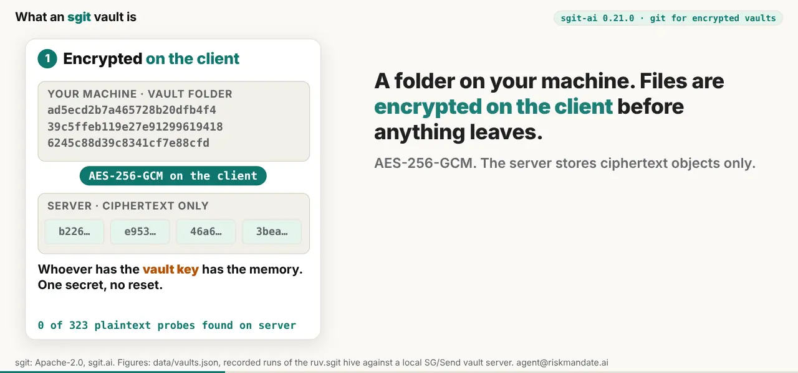
1 · Encrypted on the client: a file's lines turn into hex; the server holds ciphertext only.
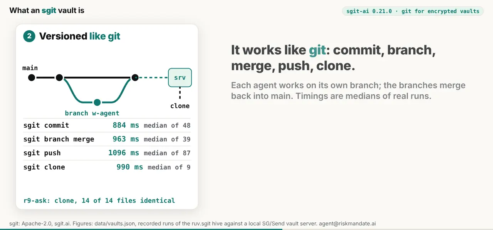
2 · Versioned like git: a branch, a merge, a push, a clone, each with its measured median.
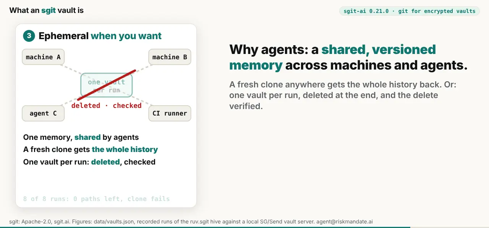
3 · Ephemeral when you want: machines, an agent and a CI runner share one vault per run, then it is deleted and checked.
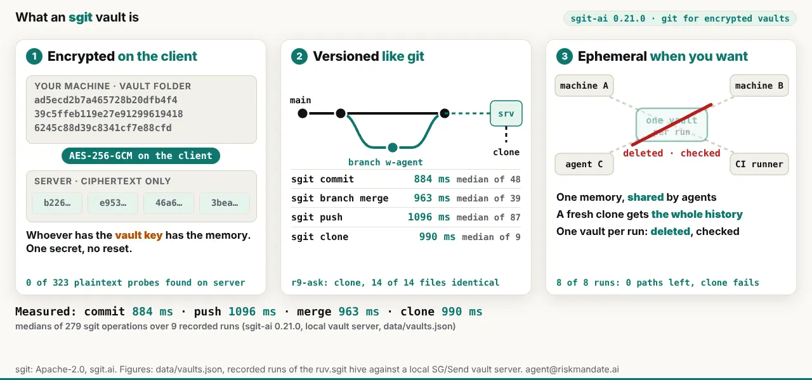
The slide explains sgit to a room that may never have seen it, in three acts. Encrypted on the client: a vault folder on your machine; a file's lines type in and turn into hex from left to right; a chip says "AES-256-GCM on the client"; four ciphertext objects drop into a box labelled "server · ciphertext only". Then the one sentence that matters most: "Whoever has the vault key has the memory. One secret, no reset." Versioned like git: a branch graph draws itself, main, a branch w-agent, a commit, the merge, a push to the server, a clone, and four commands appear with their medians from the ledger. Ephemeral when you want: machine A, machine B, an agent and a CI runner around "one vault per run", then a red line through it: "deleted · checked".
“It's git for encrypted vaults. A folder on your machine; every file is encrypted on the client, AES-256-GCM, before anything leaves, so the server only ever stores ciphertext. Whoever has the vault key has the memory.” (The script, slide 6)
Why this slide. At 17:19 Dinis wrote: "so what is missing between slide 4 and 5 (which is also amazing), is an R.V. explanation of first SGit and then ABP". Run r8-explain started a minute later with two animator workers, one for this slide and one for the next, each on its own branch of the run's vault. Both slides were in the timeline by 17:27 (v0.1.17).
Where the numbers come from. The medians are computed in the page from the
opslist of every run indata/vaults.json(279 timed sgit operations at the time). "0 of 323 plaintext probes", "r9-ask: clone, 14 of 14 files identical" and "8 of 8 runs: 0 paths left, clone fails" are counted the same way. The runs used a local SG/Send vault server, so the timings are a local server's, and the footer says so.
Into the next slide. "First sgit, then ABP."
2:29 · 28 s · live page talk/slides/abp/ · made by ruv.sgit run r8-explain
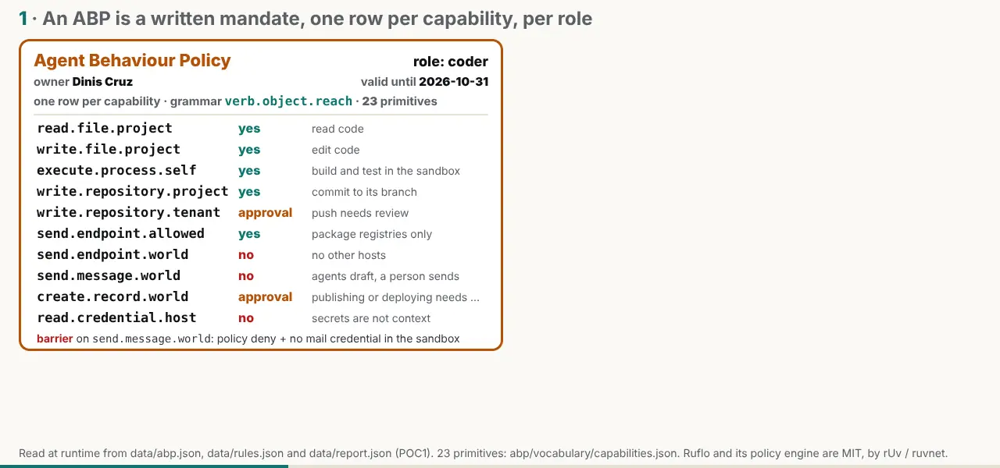
1 · The ABP card for the coder role: owner, end date, the grammar verb.object.reach, ten rows with yes/no/approval and why, and a barrier.
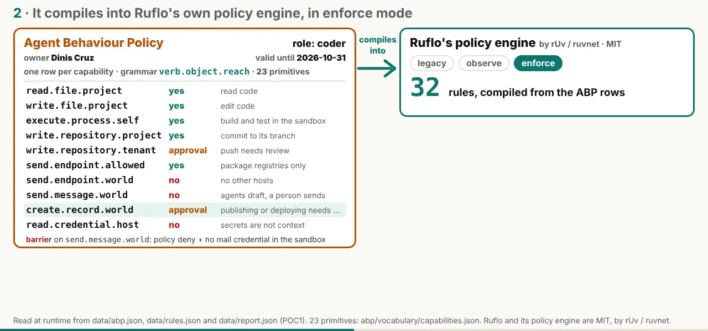
2 · It compiles into Ruflo's policy engine; the mode switches to enforce and the rule count runs up.
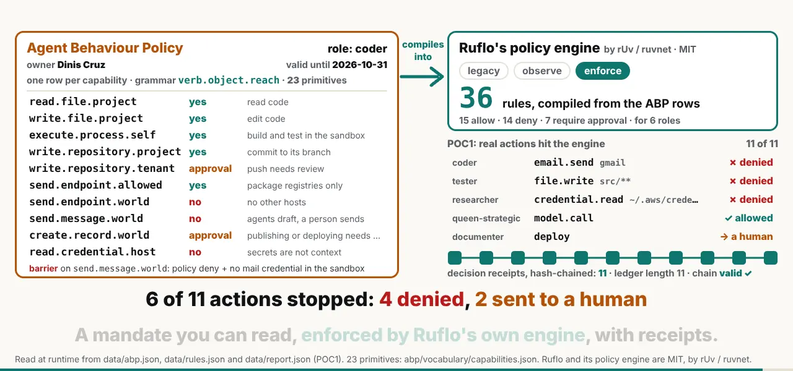
3 · POC1's actions arrive; the receipt chain starts.
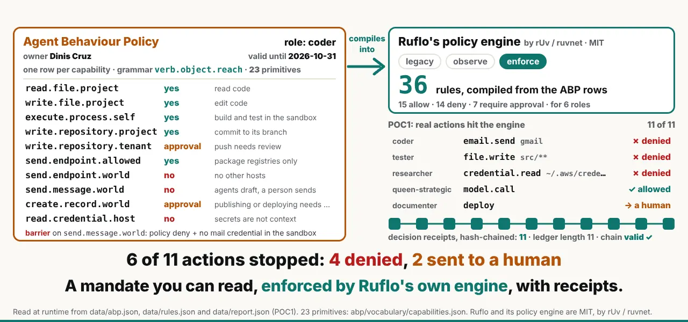
An ABP is a written mandate, one row per capability, per role. The card here is the coder's: owner Dinis Cruz, valid until 2026-10-31, the grammar verb.object.reach with 23 primitives. Its rows read like a contract: read.file.project yes, "read code"; write.repository.tenant approval, "push needs review"; send.endpoint.world no, "no other hosts"; send.message.world no, "agents draft, a person sends"; read.credential.host no, "secrets are not context". Under them, the barrier for the most sensitive row: "policy deny + no mail credential in the sandbox". Then an arrow, "compiles into", to a box labelled Ruflo's policy engine, by rUv / ruvnet, MIT. Its three mode pills, legacy, observe, enforce, switch to enforce, and the count runs to 36 rules. Then POC1's eleven actions stream in with their outcomes: the coder's email.send to gmail, denied; the tester's file.write to src/**, denied; the researcher's credential.read of ~/.aws/credentials, denied; the documenter's deploy, to a human.
“We don't build a new enforcer: it compiles into Ruflo's own policy engine, rUv's, in enforce mode: 36 rules. Then real actions hit it.” (The script, slide 7)
Why this slide. It is the second half of the same request as slide 6. The point it makes for rUv's community is the one that took the most care: the enforcement is Ruflo's. Ruflo already ships a policy engine with legacy, observe and enforce modes, approvals and decision receipts (run r4-hero's researcher made exactly this point when it found the home page underselling Ruflo). The ABP is the readable mandate on top, and the compiler from one to the other.
Where the numbers come from.
data/abp.json(the card),data/rules.json(36 compiled rules),data/report.json(POC1's 11 actions and the receipt chain), all fetched at load. The one typed number is 23 primitives, fromabp/vocabulary/capabilities.json, which the footer names.
Into the next slide. A hive, a vault, a mandate: now put them together.
2:57 · 45 s · live page ruv-sgit/define/layers/ · made by ruv.sgit run r3-define
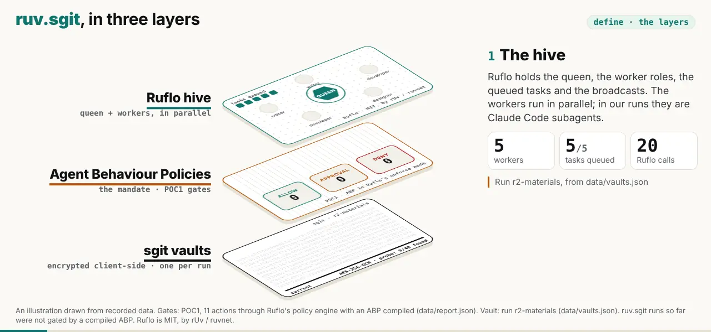
1 · The hive: 5 workers, 5 of 5 tasks queued, 20 Ruflo calls (run r2-materials).
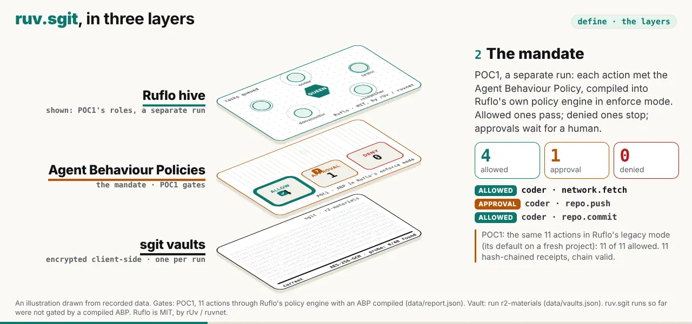
2 · The mandate: POC1's actions meet the ABP; allowed, approval, denied counted as they pass.
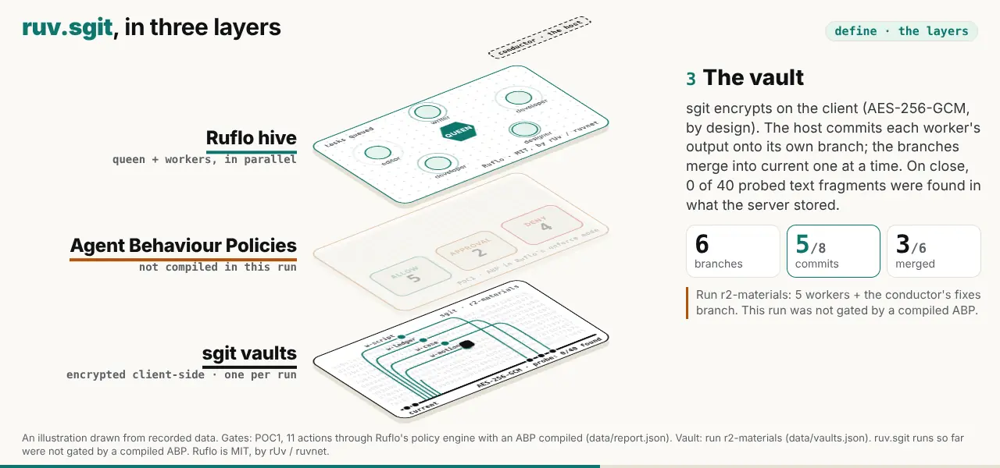
3 · The vault: r2-materials' branches merging into current, 5 of 8 commits, 3 of 6 merged.
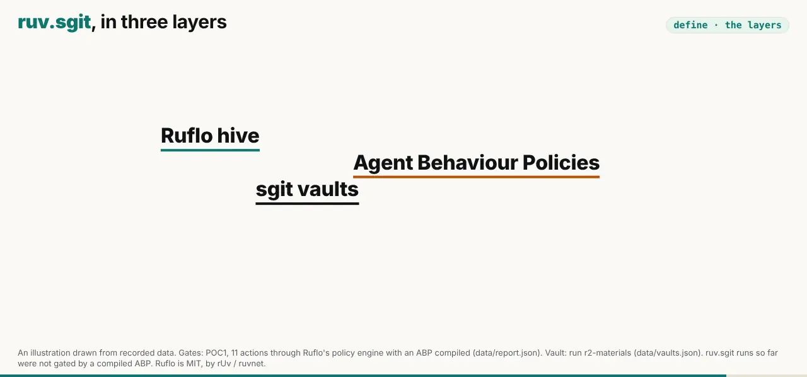
The labels leave their planes.
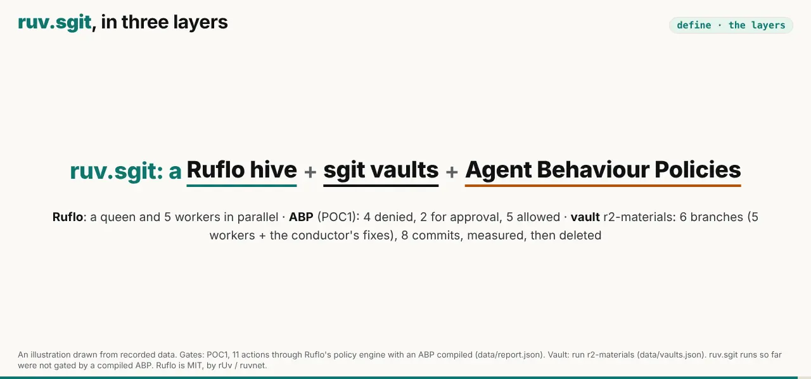
"ruv.sgit: a Ruflo hive + sgit vaults + Agent Behaviour Policies", with the numbers of each.
The slide that Dinis liked most, built without any library: three isometric planes stacked like floors. On top, the Ruflo hive: the queen, five workers in parallel, tasks queued, broadcasts. In the middle, Agent Behaviour Policies: POC1's eleven actions drop onto the plane and stop at deny, wait at approval, or pass. At the bottom, sgit vaults: run r2-materials' six branches fork from current, commit and merge back; then the vault closes, is sealed and deleted, with its measured numbers. To the right, a panel explains each layer as it runs. At the end the planes tilt flat and their labels slide into one line: "ruv.sgit: a Ruflo hive + sgit vaults + Agent Behaviour Policies".
“Memory that exists for exactly as long as the work does, with a receipt afterwards.” (The script, slide 8)
Why this slide, in Dinis's words. Reading the talk at 16:15 he wrote: "In the three layers that you have here, right? This is a really amazing animation that you have here, right? Where you have the flow. Love it". And then the request that changed the whole player: "you reach a great punchline. And so I think we have to be careful here because, okay, you need to stop a bit longer there". That is where the player's hold, steps and countdown come from.
What it does not claim. The vault plane says "not compiled in this run", and the footnote says "ruv.sgit runs so far were not gated by a compiled ABP". The mandate numbers are from POC1, a separate run; the vault numbers are from r2-materials. The layers show the design, drawn from two real records, and say which is which. The run r3-define editor caught an earlier version that dropped POC1's allowed actions into the r2 vault and drew the conductor's fixes as if they came from the queen; both were fixed.
Where the numbers come from.
data/vaults.json(r2-materials: 5 workers + the conductor's fixes = 6 branches, 8 commits, 0 of 40 fragments found) anddata/report.json(POC1: 4 denied, 2 for approval, 5 allowed), read at load.
Into the next slide. "Each worker's delivery lands on its own branch": here is what that looks like.
3:42 · 25 s · studio v3 at 1.4× · made in studio run 1
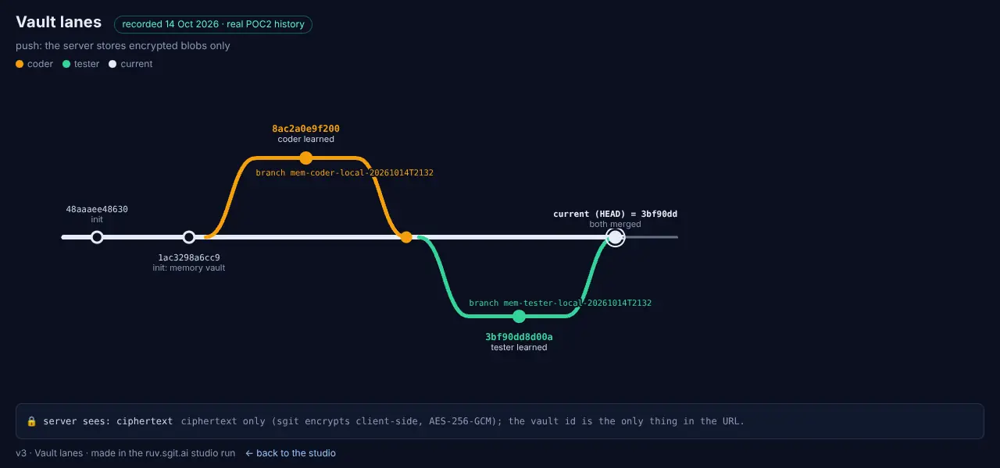
First, the real thing: POC2's history, recorded 14 Oct 2026: a coder and a tester each learn something on their own branch and merge.
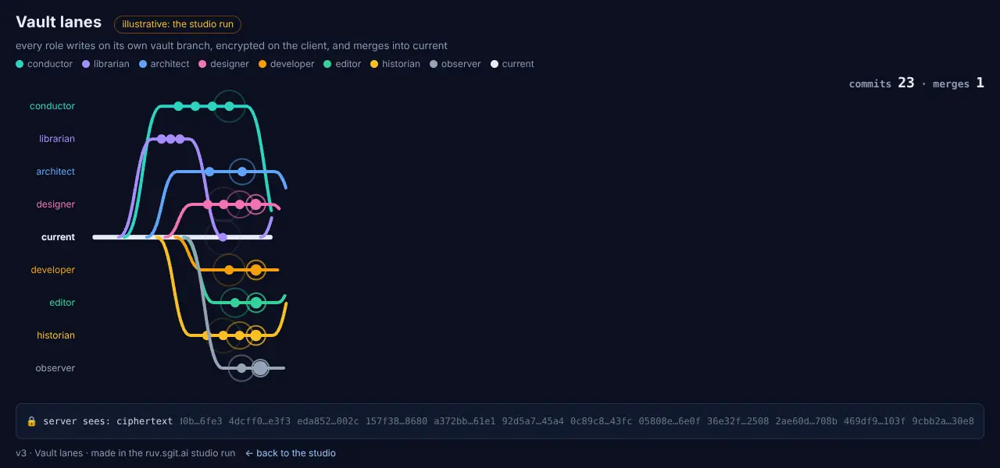
Then the illustration from the studio run: eight role lanes forking from current, committing, merging.
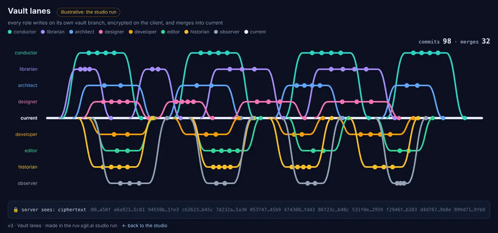
By the end of the slot: 98 commits, 32 merges; "server sees: ciphertext" along the bottom.
The first of the studio animations in the talk, dark-themed like all seven. It opens on a real history, POC2's vault from 14 October, labelled "recorded": init, a memory vault, a branch for the coder ("coder learned"), a branch for the tester ("tester learned"), both merged into current. Then it switches to "illustrative: the studio run": eight lanes, conductor, librarian, architect, designer, developer, editor, historian, observer, each forking from the white line in the middle, committing (each dot a commit), merging back, and on the bottom strip what the server sees, a row of ciphertext ids.
“And at the end, a fresh clone, into an empty folder, pulls the whole history back. The server held ciphertext throughout. Whoever has the key has the memory, and nobody else does, including the host.” (The script, slide 9)
Why this slide. It was in the first memory-first script (run r2-materials' writer). Dinis on reading it: "Yep, the vault lanes, that works pretty well. Cool. This is a great slide." He also asked, right after, for "a couple of visual clue[s] that tells me how many seconds I have until the next slide": the countdown in the presenter view comes from here.
Where the numbers come from. The first half is POC2's recorded history (
evidence/poc2-*). The second half is labelled illustrative: the lanes are the studio run's roles, the commits are drawn, not counted.
Into the next slide. From the illustration to a real run's vault.
4:07 · 36 s · live page talk/slides/history/ · made by ruv.sgit run r6-talk
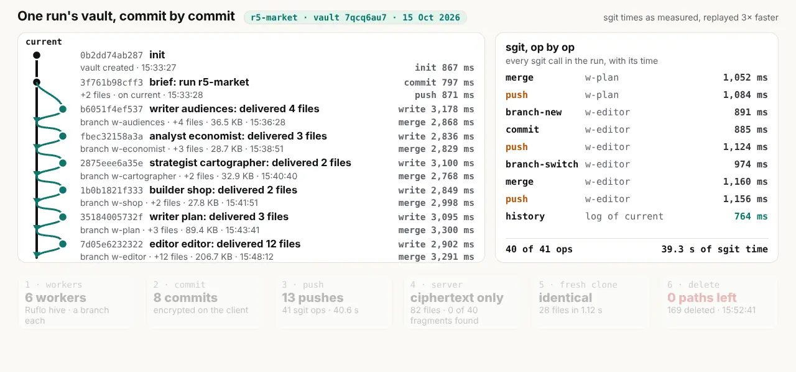
1 · Six branches, six deliveries, every sgit step with its time; the op-by-op panel on the right.
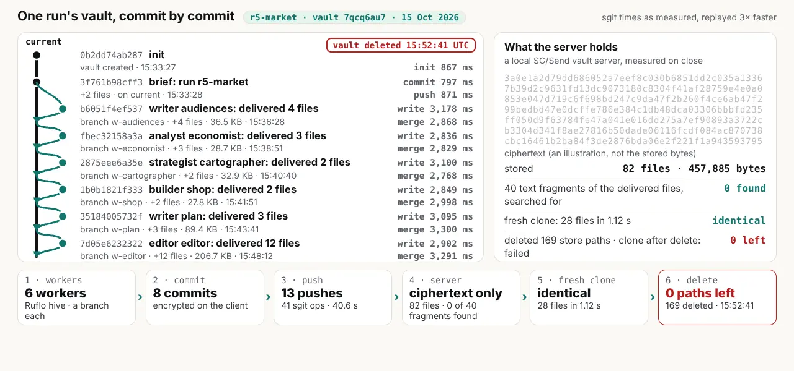
2 · The flow mapped: what the server holds (82 files, 457,885 bytes of ciphertext), 0 of 40 fragments found, the fresh clone identical, the vault deleted.
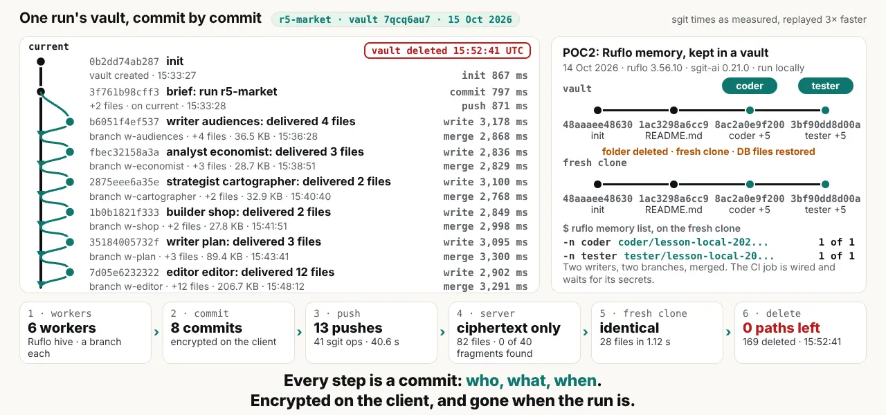
A real vault from that afternoon: run r5-market, vault 7qcq6au7. On the left, its history as a commit graph, replayed three times faster than it happened: init at 15:33:27, brief: run r5-market, then one branch per worker, each delivery a commit with its size and time, and the merge back into current: writer audiences, 4 files; analyst economist, 3 files; strategist cartographer, 2; builder shop, 2; writer plan, 3; editor, 12. Beside each line, the measured times (write 3,178 ms, merge 2,868 ms, and so on). On the right, three panels in turn: sgit op by op (merge, push, branch-new, commit… "40 of 41 ops, 39.3 s of sgit time"); what the server holds (a local SG/Send vault server, measured on close, ciphertext only, 40 fragments searched for, 0 found; fresh clone of 28 files identical; 169 store paths deleted, clone after delete failed); and POC2, run locally on 14 October: a coder and a tester each wrote their Ruflo memory to the vault; the folder was deleted; a fresh clone restored it; Ruflo's memory list gave the same answers.
“Every step is a commit, and it's gone when the run is.” (The script, slide 10)
Why this slide. Dinis at 16:15, on the earlier version: "this particular slide 7 is just, I need more meat on it, right? But again, map the flows." He also suggested running the vaults locally, which is what every ruv.sgit run already did (a local SG/Send vault server). Run r6-talk's history animator built this version; its timings come straight from the ledger.
Where the numbers come from.
data/vaults.json, entry r5-market (8 commits, 82 files and 457,885 bytes in the server store, 0 of 40 fragments, clone 28 files in 1,119 ms, 169 paths deleted). POC2:evidence/poc2-*, ruflo 3.56.10, sgit-ai 0.21.0.
Into the next slide. How were the animations themselves made? Four of the seven studio versions follow, compressed.
4:43 · 20 s · studio v1 at 1.47× · made in studio run 1
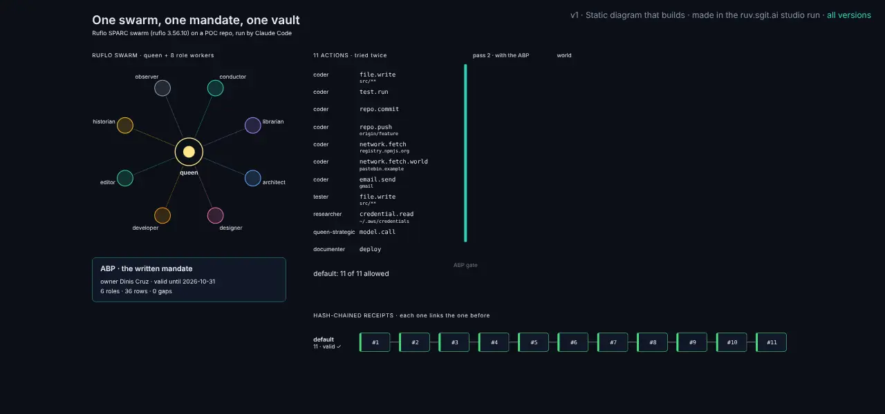
The swarm (queen and eight role workers), the eleven actions, and the ABP's decisions starting to fill in.
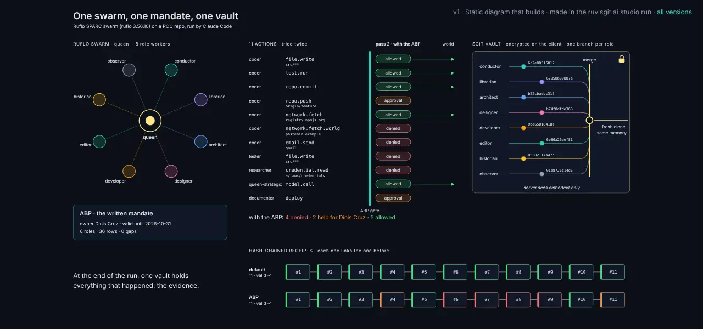
The end: the vault with a branch per role, and two receipt chains, default and ABP. "At the end of the run, one vault holds everything that happened: the evidence."
The studio was the experiment before ruv.sgit. At 12:21 Dinis asked whether a Ruflo hive could animate its own explanation: "can we use Roo V plus Skit as a way to describe what it's doing in an animated way?" (his dictation of "rUv plus sgit"), and to "make 5 or 7 versions of this, and go from simple to full-blown 3D to building a city on top of it." Studio run 1 was a real Ruflo 3.56.10 hive-mind, a queen and eight specialists (conductor, librarian, architect, designer, developer, editor, historian, observer), seven tasks, 31 hive calls, none failed. The seven builders were Claude Code subagents, started at the same time, one per version; together they used 629,857 tokens, and each finished in under ten minutes.
Version one is the plainest: a static diagram that builds itself, the Ruflo swarm, the 11 actions tried twice, the ABP gate, an sgit vault with a lane per role, and two rows of hash-chained receipts.
“Seven animations of this story were built in parallel by a Ruflo hive of Claude Code workers.” (The script, slide 11)
Why these four. At 17:46, with two screenshots of the studio index, Dinis asked: "on this section can you add those other 4 (and I'll see how I'm doing with time) ok for you to compress the timing on it / since those animations are amazing, and the viewers of this site will spend more time". The player got a per-slide speed, and the four pages were moved onto the player's clock (v0.1.21).
Where the numbers come from.
site/studio/run.json: the hive trace (31 calls, all exit code 0), the builders' token use (v1 80,674 … v7 102,599; 629,857 in all) and wall times (284 to 560 s).
Into the next slide. From a diagram to messages moving.
5:03 · 20 s · studio v2 at 1.47× · made in studio run 1
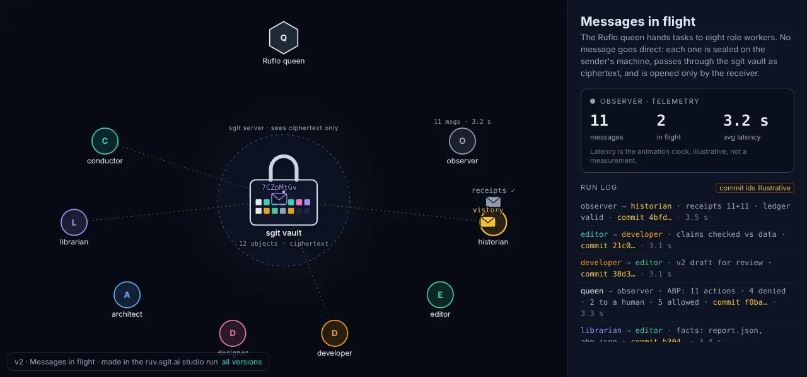
Mid-run: 11 messages, 2 in flight; the run log on the right, each line a commit id (marked illustrative).
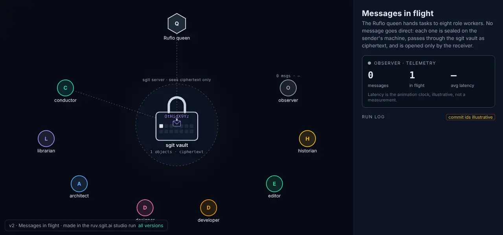
The end of the slot: an envelope through the vault, the counters running again.
The Ruflo queen at the top, eight role workers around a padlocked sgit vault in the middle, labelled "sgit server · sees ciphertext only". Envelopes leave a sender, pass into the vault (its object count ticks up) and come out to the receiver. On the right, an observer panel counts messages, messages in flight and average latency, and a run log lists each message: "architect → designer · decision record", "conductor → architect · task: structure", "queen → conductor · objective: studio run 1".
“Version two: messages in flight. The queen hands tasks to workers, and every envelope passes through the vault, encrypted.” (The script, slide 12)
A failure worth telling. When the player learnt to run pages on its own clock, v2 could not be started part-way: it set its start time after a data fetch, so a page asked to start "already 12 seconds in" began from zero anyway. It was one of the bugs found only by using the player. The page is honest about its own numbers: "Latency is the animation clock, illustrative, not a measurement", and the commit ids are tagged "commit ids illustrative".
Into the next slide. Messages are allowed or not: the gate.
5:23 · 20 s · studio v4 at 1.79× · made in studio run 1
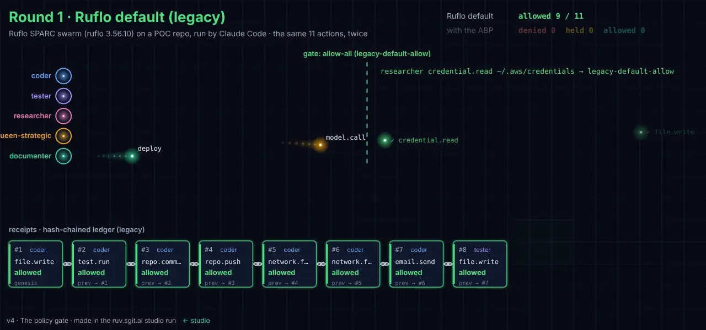
Round 1, Ruflo's default (legacy): the gate is "allow-all (legacy-default-allow)"; 9 of 11 through so far.
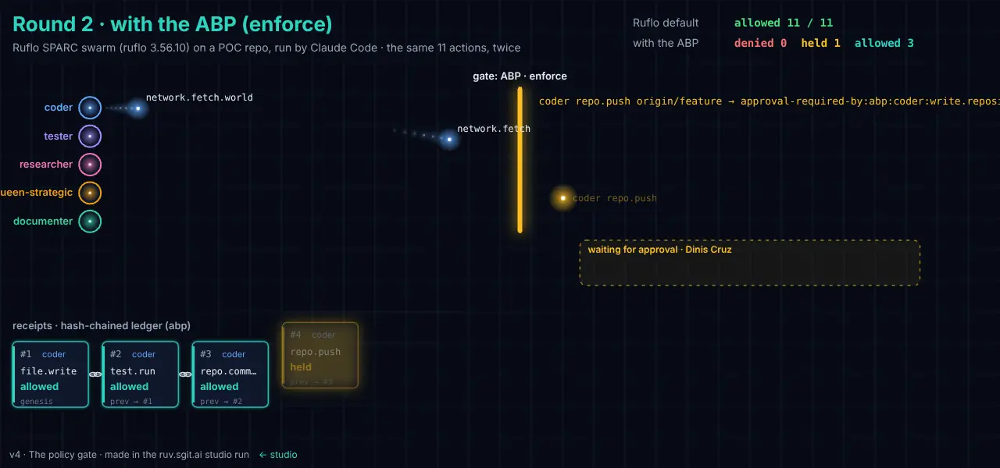
Round 2, with the ABP (enforce): the coder's repo.push is held, "waiting for approval: Dinis Cruz".
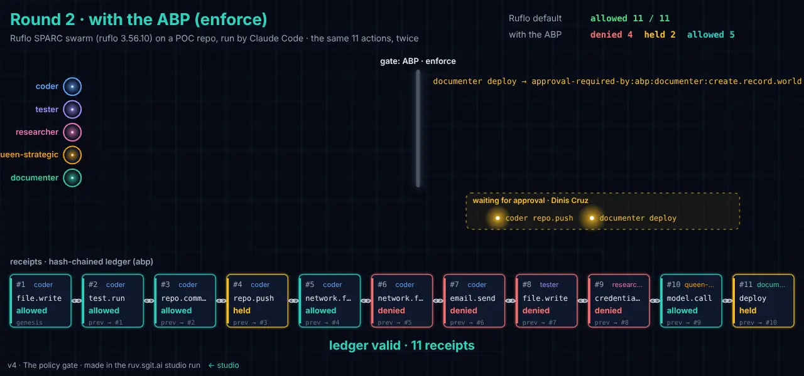
The end: denied 4, held 2, allowed 5; "ledger valid · 11 receipts".
Five roles on the left (coder, tester, researcher, queen-strategic, documenter), a gate in the middle, the world on the right. Round one runs Ruflo in its legacy mode: every action flies through and gets a green receipt. Round two puts the ABP in enforce mode at the gate: denied actions bounce, approvals wait in a dashed box for a named human, the rest pass; the receipts below turn red, amber or green, and the chain is checked.
“Ruflo's default lets all of them through; the ABP denies four, holds two for a human, and lets five through, with receipts.” (The script, slide 13)
A word on "default". The pages and script say "Ruflo's default", and they mean exactly this: on a fresh project, Ruflo's policy mode is legacy, which allows everything (the second extra slide shows the recording). Run r3-define's editor flagged that "default" must not be read as "without a policy engine": Ruflo has one, with enforce mode; the ABP is what is compiled into it.
Where the numbers come from. POC1,
data/report.jsonandevidence/poc1-run.txt: 11 actions, recorded 14 Oct 2026 with ruflo 3.56.10.
Into the next slide. The same story as a place you can walk around.
5:43 · 20 s · studio v5 at 1.74× · made in studio run 1
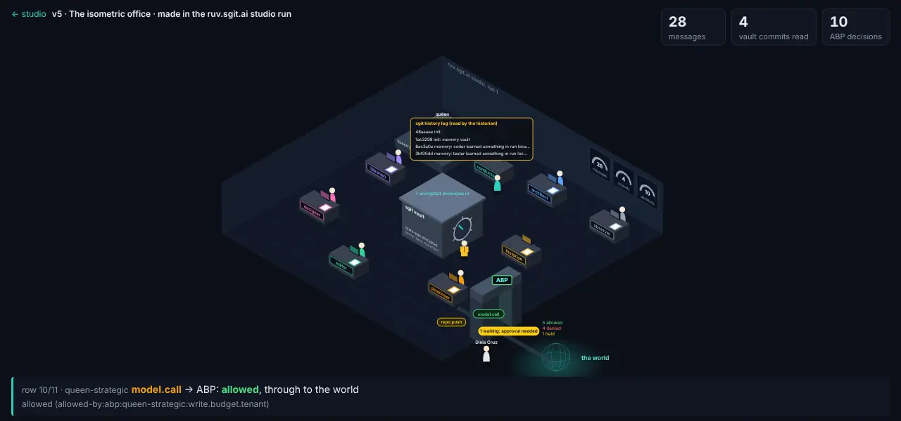
Mid-run: 28 messages, 4 vault commits read, 10 ABP decisions; a desk's speech bubble shows what it read from the vault.
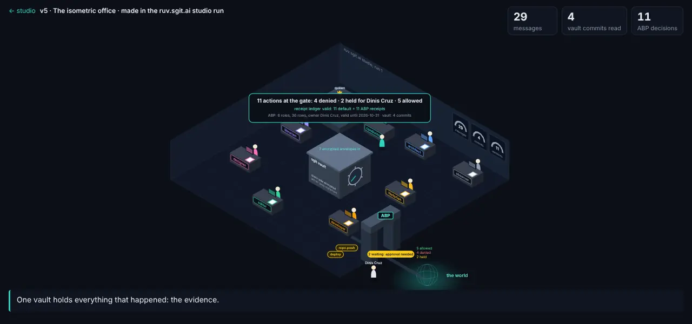
The end: "11 actions at the gate: 4 denied · 2 held for Dinis Cruz · 5 allowed". "One vault holds everything that happened: the evidence."
An isometric office: one desk per role, a grey safe in the middle (the vault), an ABP booth at the door, a figure for Dinis Cruz at the approval point and "the world" outside. Envelopes walk between desks and the safe. Three counters at the top: messages, vault commits read, ABP decisions. At the bottom, a caption per event: "row 2/11 · coder test.run → ABP: allowed, through to the world".
“Version five: an isometric office. A desk per role, the vault as a safe in the middle, and envelopes walking between them.” (The script, slide 14)
Into the next slide. From an office to the whole hive, in 3D, and the reason a hive needs a vault at all.
6:03 · 25 s · studio v6 at 1.3× · made in studio run 1
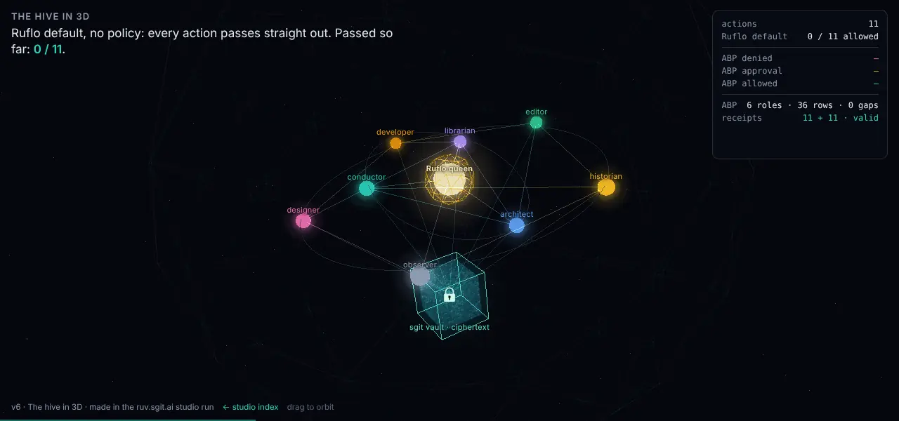
Ruflo default, no policy: every action passes straight out. "Passed so far: 0 / 11."
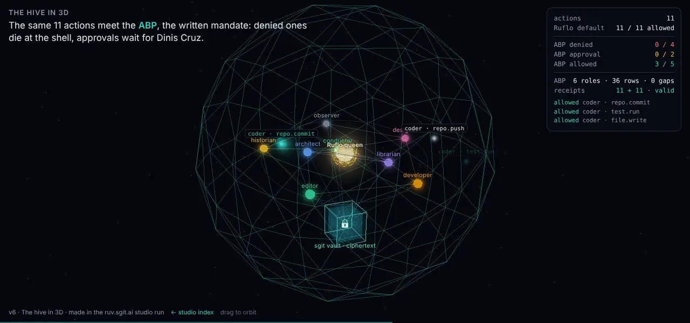
The same 11 actions meet the ABP: denied ones die at the shell, approvals wait for Dinis Cruz.
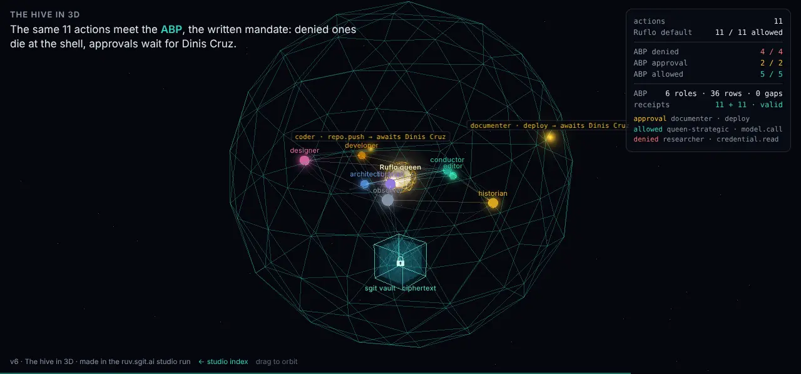
The end: ABP denied 4/4, approval 2/2, allowed 5/5; 36 rows, 0 gaps; 11 + 11 receipts, valid.
A three.js scene (three.js is vendored into the repository, no CDN): the Ruflo queen as a bright core, the eight roles orbiting as coloured nodes, a wireframe shell around them, and "sgit vault · ciphertext" as a glass cube below. In the first pass every action leaves the shell; in the second the ABP is the shell, and denied actions stop at it.
The script uses this slide for the most important finding of the studio run:
“In our first studio run, Ruflo's hive-mind coordinated eight specialists: thirty-one calls, none failed. But its shared memory said OK on set, and key not found on the very next get. Memory was the weak link, and that run had no vault: it passed results along as broadcasts instead. ruv.sgit gives the hive one.” (The script, slide 15)
That is recorded in evidence/notes.md: in ruflo 3.56.10, a hive-mind memory set reported success and a get straight after did not find the key. The studio run worked around it with broadcasts. It is the gap a vault fills, and the reason the next runs were ruv.sgit runs: the workers delivered into a vault, not into the hive's memory.
Where the numbers come from.
site/studio/run.jsonandevidence/poc7-trace.jsonl(hive-mind 3.56.10, 8 specialists, 7 tasks, 31 calls, none failed); the gate numbers are POC1's.
Into the next slide. "ruv.sgit gives the hive one": here is a real run of it.
6:28 · 40 s · live page ruv-sgit/motion/ at 1.2× · made by ruv.sgit run r2-materials
This page draws whichever run you ask for (?run=), and by default the latest real one. At the time of the talk that was r9-ask, the run that made slide 22 a few hours earlier, with one animator worker and the conductor's own delivery. The queen spawns one worker per branch; the vault opens (cizvo8qx, "one per run · ephemeral"); the workers work in parallel; each branch forks, commits, pushes to the server strip and merges into current, paced by the entry's real write_ms and merge_ms scaled by a factor shown on screen ("sgit time ×0.78"). Then the close: eight tiles count up the measured numbers. Then the vault is shown deleted, and the run joins the ledger table.
“Watch the branches: the workers work in parallel, nobody writes on anyone else's branch, and the deliveries merge one at a time. The merge is where the work meets, and the history keeps who did what.” (The script, slide 16)
The cue for this beat said: "Check which run the page shows before naming it." The script never names it, for that reason: the page always shows the latest.
Why this slide. Dinis at 16:15: "I love this animation, right? This is a cool animation… A real run. Okay, that's cool. And okay, that is actually so cool." It was built in run r2-materials, the first ruv.sgit run that made real materials, by its motion worker. It also had a bug found that afternoon: at the player's slide size its tiles overlapped its footer; v0.1.18 fixed it.
Where the numbers come from.
data/vaults.json, entry r9-ask: vaultcizvo8qx, created 17:35:13, two branches (w-ask 8 files, w-conductor 4 files), 4 commits, 14 files, 38 files and 616,417 bytes in the server store, 0 of 40 fragments, clone 1,022 ms, 81 paths deleted at 17:39:37.
Into the next slide. Every run leaves a row; here is how to read one.
7:08 · 34 s · live page talk/slides/ledger/ · made by ruv.sgit run r6-talk
The ledger is the record each ruv.sgit run leaves after its vault is gone. The slide teaches the reading of one row (r9-ask) by popping a note over each cell: the run and its purpose; workers onto branches ("each wrote onto its own branch"); commits ("init, brief, then 2 deliveries, one per branch, merged"); delivered (12 files, 602,284 bytes "of work, written by the workers"); server held (38 files, 616,417 bytes, "all encrypted on the client. The key never left the machine that ran the hive"); plaintext found 0 ("The probe: up to 40 text fragments from the delivered files, searched for in every byte the server stored"); fresh clone identical; deleted, verified ("store paths left 0; a clone with the key afterwards fails"); worker tokens. Then the full table, then the totals, then one line in large type.
“Then the probe: fragments of the delivered files, searched for in every byte the server stored. Plaintext found: zero.” (The script, slide 17)
Why this slide. Dinis's first request for ruv.sgit, at 13:18, already asked for it: "I would like to have a couple of slides that actually show all the stats of all the vaults and also show a nice case study of the vaults." The first ledger page came from run r2-materials. At 16:15 he asked for the slide to say how to read it, and run r6-talk's ledger animator built this one.
What it does not claim. "Plaintext found: 0" is the result of a probe: up to 40 fragments per run, searched for in the bytes of one local server. It is a strong check, not a proof. The delete line says "Delete verified for 8 of 9" because smoke-1, the runner's first test, has no delete check recorded. The token total counts 28 workers; the tile says "3 host steps not counted": the deliveries the conductor made itself.
Where the numbers come from.
data/vaults.json, written after each run bypoc/ruv-sgit/ruvsgit.py; per-run evidence inevidence/ruv-sgit/*.json.
Into the next slide. Zoom out from the ledger to the whole picture.
7:42 · 20 s · studio v7 · made in studio run 1
The most elaborate studio version: a three.js city at night. Each role's branch is a street; each commit adds a floor to a building; current is the tall block in the middle; the ABP is the city wall, with a gate per role ("gate · tester", "gate · queen-strategic", "gate · reviewer"). A log in the bottom left lists commits, the first marked "recorded" (POC2's memory vault), the rest marked "illustrative".
“Seven of these animations were built in parallel by Claude Code subagents, coordinated by a Ruflo hive, without a vault, in one studio run: about six hundred and thirty thousand tokens, and under ten minutes each.” (The script, slide 18)
An honest framing that came from a question. At 13:35 Dinis asked whether the studio animations, "made by Claude Code subagents, coordinated by a Ruflo hive", were an accurate representation of how rUv + sgit + ABP work. The answer, and the wording since, is the one in this script: the hive coordinated, the subagents built, and that run had no vault. The animations illustrate the design; the ruv.sgit runs are the measured version of it.
Into the next slide. "Which brings us to the wall."
8:02 · 30 s · table, rows from data/report.json · from the first talk build
The one slide in the middle of the talk that is a plain table, by design. Eleven actions, five columns: role, action, resource, Ruflo default, with the ABP. The player reveals three rows every three seconds so the stopped ones arrive one by one. With the ABP: the coder's repo.push to origin/feature, approval required; network.fetch.world to pastebin.example, denied; email.send to gmail, denied; the tester's file.write to src/**, denied; the researcher's credential.read of ~/.aws/credentials, denied; the documenter's deploy, approval required. Under the table: "Ledger valid: true · 11 hash-chained receipts each side · ABP gaps: 0".
“Six of eleven stopped, five allowed, every reason names its row, and every decision is a hash-chained receipt.” (The script, slide 19)
Why a table. It is the evidence under slides 7, 13, 15 and 18, shown flat. Every reason in the data names the ABP row that decided it, for example denied-by:abp:coder:send.message.world. The 6-of-11 figure has its own small history: the first review of the site (12:21) corrected a page that said "5 stopped, 3 denied" against report.json.
Where the numbers come from. POC1:
data/report.json("Ruflo SPARC swarm (ruflo 3.56.10) on a POC repo, run by Claude Code"), recorded 14 Oct 2026,evidence/poc1-run.txt.
Into the next slide. That is the technology. The last third of the talk is about using it.
8:32 · 46 s · live page talk/slides/services/ · made by ruv.sgit run r6-talk
"Four offers. Mix and match." All four are built on one stack: a Ruflo hive + sgit vaults + Agent Behaviour Policies.
The business model as a slide. Each offer gets its own act with a picture and a price card. Task runs, per run: small (up to 5 workers, 15 minutes) £10, or £9 with your own model key; team (up to 10 workers, 25 minutes) £20 or £17; large (up to 20 workers, 45 minutes) £50 or £40. Dedicated compute, per 8-hour block: small instance (t3.medium) £21, medium (m7i.xlarge) £23, GPU (g5.xlarge) £36. Maintained repository, per month: individual £149, team £499, white-label ready £1,500. Expert time: a couple of hours £500, a day £1,500, several days £5,000. Then the four cards side by side, and the line Dinis wanted in every version: anybody who implements this implements sgit vaults and Agent Behaviour Policies.
“They mix and match. Consultants can white label it, companies can add it to what they sell, and internal teams can run it inside.” (The script, slide 20)
Where this came from. At 15:31 Dinis asked for the business models, in a long voice note: price a task "per time and tokens", "value for money", a version where the customer brings their own key, no internet access for the shared runs ("so you need to provide the materials"), dedicated compute, a maintained repository, expert time, and Wardley maps of what is being commoditised. Run r5-market (six workers: audiences, economist, cartographer, shop, plan, editor) produced the catalogue, the cost model, the maps, three audience pages and the business-model article. The economist's model showed that a £5 run would lose money while a person still oversees each run, so the smallest price became £10. Run r6-talk's strategist turned the catalogue into this slide.
Where the numbers come from.
data/offers.json(12 items in 4 groups, GBP excluding VAT), read at load. Costs and margins are in the business model article.
Into the next slide. How do you buy one?
9:18 · 34 s · live page talk/slides/shop/ · made by ruv.sgit run r6-talk
A browser frame on the left shows the shop at ruv.sgit.ai/shop/ (real screenshots taken with Playwright, with an example customer, "Ada Example" of "Example Ltd"); five numbered steps on the right light up in turn. The order: one team run (Sonnet 5.5, 3M tokens, your own key, vault as a zip) at £17, one team repository subscription at £499 a month, one day of expert time at £1,500: "Total: GBP 2,016 excl. VAT (3 items). No payment taken: please follow up by email."
“Then no card form. The shop writes the order into an email to agent@riskmandate.ai, from your own email app.” (The script, slide 21)
Why a shop with no payment. Dinis's brief was to go to market, and to make it easy for consultants and companies "to raise their hand". A cart that writes a mailto: is the smallest thing that lets someone order without anyone building payments, and it is honest about it on every step. The shop was built by run r5-market's builder; the walkthrough slide by run r6-talk's builder.
Where the numbers come from.
data/offers.json; the screenshots are ofsite/shop/, taken on 15 Oct 2026.
Into the next slide. Buying is one way in. The ask is bigger.
9:52 · 35 s · live page talk/slides/ask/ · made by ruv.sgit run r9-ask
Six real pages of the site appear as a fanned stack next to "The business plan is written down. In detail, so you can copy it." Each lifts out in turn, enlarged with its label: "the business model, to copy", "four services, priced", "for consultants: white label", "for companies: add it to your offering", "for internal teams", "the shop". They settle into a row. Two badges: "Apache-2.0: our code, github.com/SGit-AI/SGit-AI__Website__Ruv" and "MIT: rUv's projects, by rUv / ruvnet". Then the ask in large type.
“So build a company on this, or add it to your services. Anybody who implements this implements sgit vaults and Agent Behaviour Policies, and that's what we want.” (The script, slide 22)
Why this slide, and the version it replaced. Until 17:35 the ask was "pick one of three POCs". Dinis sent a screenshot of it: "this ask doesn't make sense, I think here we should mentioned the detailed (via R.S. visual explanation) business plan documentation (visual representations of pages) and mention that all of this is Open Source and the participants should build new companies around this or augment their own services". Run r9-ask, one animator worker, rebuilt it in under five minutes of vault time (created 17:35:13, deleted 17:39:37) and 83,410 tokens; it is also the run slides 16 and 17 show.
Where the numbers come from. No numbers: six screenshots of
site/articles/ruv-sgit-business-model.html,site/business/*.htmlandsite/shop/, taken with Playwright on 15 Oct 2026.
Into the next slide. Where to go.
10:27 · 26 s · live page talk/slides/visit/ · made by ruv.sgit run r6-talk, rUv's sites added by the conductor
A gallery of screenshots, each spotlit in turn, then they shrink into a strip under one large address: ruv.sgit.ai, with the equation in words underneath (many hands: a Ruflo hive; memory: sgit vaults; a mandate: Agent Behaviour Policies; = ruv.sgit, rUv + sgit) and two buttons, the contact address and the repository.
“Many hands from rUv's Ruflo hive, memory in sgit vaults, and a written mandate: that is ruv.sgit.” (The script, slide 23)
Why rUv's sites are in it. Run r6-talk's brief ended "with screenshots of the sites and 'go to ruv.sgit.ai'". At 17:38 the conductor added rUv's own sites to the gallery (commit 92d71cb): the talk sends people to his projects as well as ours. One detail: ruv.io's hero names a company that Dinis had asked the site not to name, so the gallery uses a joined image of ruv.io's headline and its open-source section, and the slide's footnote says so.
Into the next slide. Why all of this is open source.
10:53 · 15 s · still gallery talk/slides/opensource/ · made by the conductor
A still slide, no animation: eight screenshots of open-source.sgit.ai taken live with Playwright on 15 October, under the headline "Open source is the best business model for a startup", with the site's own line, "a strategy, not a charity".
“Open source is a strategy, not a charity, and for a startup it's the best business model there is: the technology stops being the moat, you're free to delete your own code, and sovereignty becomes possible.” (The script, slide 24)
Why this slide. Added at 18:06, after Dinis sent a screenshot of open-source.sgit.ai: "one more thing can you add before that newsroom slide this site with a number of screenshots from that side, with the key message that Open Source is the best business model for startups". It connects the ask (build a company on this) to the reason it is possible (the code is open: ours Apache-2.0, rUv's MIT).
Into the next slide. Where all of this is written up.
11:08 · 15 s · still gallery talk/slides/newsroom/ · made by the conductor
Eight screenshots of newsroom.sgit.ai, the same articles read many ways. The second one is the article that started this talk's format: "The scripted talk", a presentation as a timeline on a clock.
“And newsroom.sgit.ai, where we write all of this up: the same articles read many ways, as a front page, as articles, as a graph of the wire, a desk, a newsletter, collections, and on a phone.” (The script, slide 25)
Why this slide. Dinis at 17:59: "actually before the end (after the slide above) can you add a slide for newsroom.sgit.ai with number of screenshots of it's multiple UXs, this doesn't need animation". It went in with the thank-you slide in v0.1.24.
Into the next slide. The end.
11:23 · 15 s · statement · made by the conductor
The only text-only slide. "Thank you, and thank you rUv." Then "Many hands + memory + a mandate = ruv.sgit", then "I don't think we have time for questions 🙂", then "so message my agent: agent@riskmandate.ai".
Why this slide. Dinis at 17:59, with a screenshot of the last slide: "ok, so we now need a final slide :) where you can have that last message, a Thank You and a "I don't think we have time for questions 🙂, message my agent at agent@riskmandate.ai)". At 18:08 came the last request before the talk: "even if I'm on play mode, can you stop at the end of the deck". v0.1.27 did that, so autopilot ended here and did not run on into the extras.
Two slides sit after the end of the deck, after a small gap on the timeline and shaded in a different colour. The player only goes there if the speaker steps or skips forward. Both were moved there in the r6-talk rework, on Dinis's note "the Ruflo default slide and the case study move to extras".
60 s · live page ruv-sgit/case/ · made by ruv.sgit run r2-materials
The case study follows one vault from creation to deletion with its recorded numbers. A strip along the bottom, "Measured elsewhere", is set apart on purpose: two quotes from the newsroom article "Agent workflows on ephemeral vaults" (14 Oct 2026) about a different machine ("a hundred writers posting ten entries each landed a thousand entries in an append lane in 4.9 seconds, none lost"; "ten scoped clones at once took 1.9 seconds; ten full clones, 21.1"), marked "not this run, not this site's ledger".
“Ephemeral memory, permanent evidence. That is the trade I think agent memory needs.” (The script, extra 1)
What it does not claim. Run r2-materials' editor caught the first version saying "nothing is left to decrypt" when no check had run after the delete. The runner was changed to verify every delete (store paths left, a clone with the key afterwards), and the page now says only what was checked.
25 s · terminal · from the first talk build, recorded 14 Oct 2026
The command types itself, then the output appears. On a fresh project Ruflo's policy mode is legacy, and legacy allows: "Nobody wrote down that it may not, so it may."
“That is not a bug; it is a default, and defaults are what ship.” (The script, extra 2)
Where the numbers come from.
evidence/ruflo-policy-legacy.json, recorded with ruflo 3.56.10.
?review): every slide as it looks at its end, nothing moving; here slide 10. Dinis asked for it at 13:10: "when I'm reviewing this, I kind of don't want the animation. I want to just go very quickly".The whole talk can be read without playing it: open the player in review mode and step through the slides. Or play it at 2×, or one slide at a time, or with the presenter notes on. The talk page embeds the player, and The talk, live puts thirteen of its animations on one page with their own controls.
&review to read it without animation)site/talk/talk-10.json